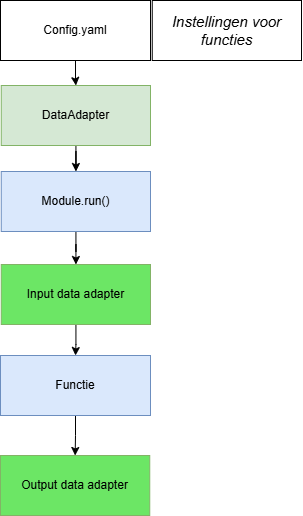
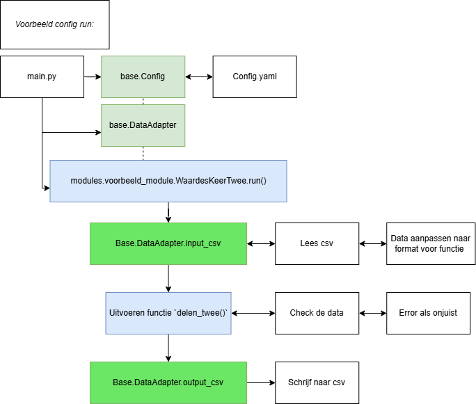

Architectuur voorbeeld
Hieronder wordt één voorbeeld gegeven van hoe de architectuur werkt. In de linker balk zijn nog een aantal voorbeelden te vinden van hoe de toolbox gebruikt kan worden.
De voorbeelden die hier in de documentatie te vinden zijn staan met de juiste data en configuratie bestanden op GitHub onder toolbox-continu-inzicht/docs/examples/notebooks/.
Daarnaast zijn tijden het ontwikkelen ook demo’s en integratie testen te vinden onder toolbox-continu-inzicht/tests/examples/.
Om de architectuur weer te geven wordt een simple voorbeeld gegeven met de proof_of_concept functie. Deze functie doet niks anders dan vermenigvuldigen en delen maar dit geeft wel de werking van de opzet weer.
De verschillende bouwstenen van de code is hier onder weergegeven:

De architectuur is ontworpen om het principe van een data adapter dier er voor zorgt dat het format waar de functie vanuit leest en naar toe wegschrijft makkelijk aangepast kan worden door de gebruiker.
Een voorbeeld van hoe dit er uitziet voor het inladen van CSV en wegschrijven naar csv is hieronder weergegeven.

importeer de benodigde functies
from toolbox_continu_inzicht import ConfigVoorbeeld met CSV
Het uitgangspunt van een architectuur is dat de verschillende functies werken met verschillende data formaten. Om dit mogelijk te maken wordt gebruik gemaakt van data adapters. Deze lezen data die de functie in gaat en schrijven het vervolgens weg. Om duidelijk te maken in welk formaat je weg wilt schrijven of wilt inlezen wordt gebruik gemaakt van een configuratie bestand. Dit is een .yaml bestand, hieronder wordt een voorbeeld gegeven hoe je dit zou opzetten met het configuratie bestand test_config.yaml.
GlobalVariables:
rootdir: "data_sets/1.proof_of_concept"
DataAdapter:
default_options:
postgresql_database:
database: "citoolbox"
schema: "citoolbox_schema"
my_csv_in:
type: csv
file: "test_csv_in.csv"
my_csv_out:
type: csv
file: "test_csv_out.csv"
my_postgresql:
type: postgresql_database
table: data
...In een configuratie bestand zijn een aantal instellingen verplicht. Het moet GlobalVariables bevatten met een root_dir en minimaal één DataAdapter. In sommige gevallen kan je ook met één DataAdapter uit de voeten, je gebruik dan dezelfde instellingen om te lezen en schrijven. Bij CSV is dit dan hetzelfde bestand, bij een database dezelfde tabel.
Een heel aantal data adapters worden standaard ondersteund en je kan makkelijk je eigen data adapter toevoegen. Onder het kopje modules/architectuur in de documentatie vindt je meer informatie over data adapters.
Onder GlobalVariables zijn instellingen voor specifieke functies te vinden, maar ook instellingen die in meerdere functies gebruikt worden. Bijvoorbeeld de huidige berekening tijd (calc_time) of de tijden waarvoor voorspellingen worden berekend (moments).
De configuratie kunnen we inlezen:
config = Config(config_path="data_sets/1.proof_of_concept/test_config.yaml")
config.lees_config()En de config mee geven aan de data adapter die we gebruiken
from toolbox_continu_inzicht import DataAdapter
data_adapter = DataAdapter(config=config)De data adapter geef je vervolgens mee bij het aanmaken van een functie
from toolbox_continu_inzicht.proof_of_concept import ValuesTimesTwo
keer_twee = ValuesTimesTwo(data_adapter=data_adapter)En vervolgens run je de module met een input en een output data adapter, dit bied flexibiliteit in welke in en uitvoer bestanden je gebruikt
keer_twee.run(input="my_csv_in", output="my_csv_out")keer_twee.df_in| objectid | objecttype | parameterid | date_time | value | |
|---|---|---|---|---|---|
| 0 | 1 | measuringstation | 1 | 1726227377000 | 4.8 |
| 1 | 2 | measuringstation | 1 | 1726227377000 | 5.0 |
| 2 | 3 | measuringstation | 1 | 1726227377000 | 5.2 |
| 3 | 4 | measuringstation | 1 | 1726227377000 | 5.4 |
| 4 | 5 | measuringstation | 1 | 1726227377000 | 5.6 |
keer_twee.df_out| objectid | objecttype | parameterid | date_time | value | |
|---|---|---|---|---|---|
| 0 | 1 | measuringstation | 1 | 1726227377000 | 9.6 |
| 1 | 2 | measuringstation | 1 | 1726227377000 | 10.0 |
| 2 | 3 | measuringstation | 1 | 1726227377000 | 10.4 |
| 3 | 4 | measuringstation | 1 | 1726227377000 | 10.8 |
| 4 | 5 | measuringstation | 1 | 1726227377000 | 11.2 |
de values waardes uit de vorige table zijn vermenigvuldigd met twee
Zelf proberen? Dit voorbeeld is te vinden op Github